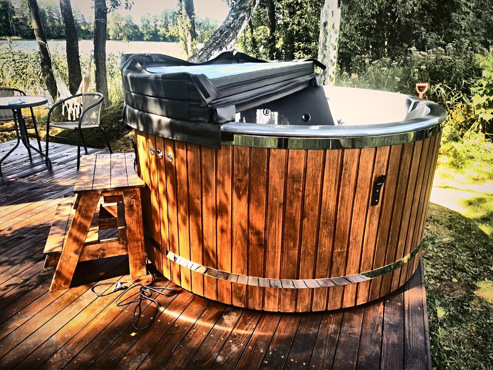

Stand: 10. November 2026

Ein Badefass mit Holzofen ist eine Anschaffung für viele Jahre. Damit es später genau zu Ihrem Garten, Ihrer Familie und Ihren Gewohnheiten passt, lohnt es sich, vor der Bestellung ein paar Fragen in Ruhe zu klären. In diesem Ratgeber gehen wir die wichtigsten Punkte der Reihe nach durch – so, wie wir sie auch mit unseren Kunden besprechen.
1. Die richtige Größe: Wie viele Personen baden?
Wählen Sie die Größe danach, wie viele Personen das Badefass am häufigsten nutzen – nicht danach, wie viele Gäste einmal im Jahr kommen. Ein größeres Badefass fasst mehr Wasser und braucht deshalb mehr Brennholz und mehr Zeit zum Aufheizen.
Wir bauen zwei Größen:
- King M: innen 185×85 cm, außen 205×100 cm, für 5–6 Personen, ca. 1.100 l Wasser
- King L: innen 200×90 cm, außen 225×105 cm, für 6–8 Personen, ca. 1.500 l Wasser
Für ein Paar oder eine kleine Familie reicht in der Regel King M: Es heizt schneller auf und braucht weniger Holz. Wenn regelmäßig Freunde mitbaden oder die Familie größer ist, ist King L die bessere Wahl. Planen Sie zusätzlich rund um das Badefass Platz für Ofen, Treppe und den Zugang für Wartungsarbeiten ein.
2. Rund oder eckig?
Die Form bestimmt, wie das Badefass im Garten wirkt und wie man darin sitzt. Runde Badefässer sind die klassische Form: Alle sitzen sich gegenüber, und die Wärme verteilt sich gleichmäßig. Eckige Badefässer haben eine kompakte Stellfläche und passen gut in Ecken, an eine Wand oder auf eine Terrasse – dabei müssen die Abstände für Ofen und Schornstein eingehalten werden.
Zusätzlich wählen Sie die Innenform, also die Form der Sitze in der Wanne. Nicht jede Innenform passt zu jeder Ofenposition; im Konfigurator sehen Sie bei jeder Form, ob sie für einen Innen- oder Außenofen gedacht ist.
3. Innenwanne: Acryl oder Gelcoat
Die Innenwanne ist die Fläche, auf der Sie sitzen und die das Wasser hält. Gelcoat ist robust, reparierbar und im Preis inbegriffen. Acryl ist besonders glatt, angenehm auf der Haut und am leichtesten zu reinigen; es ist gegen Aufpreis erhältlich. Wichtig: Ein Badefass mit Acryl-Innenwanne muss überdacht aufgestellt werden (Terrasse mit Dach, Unterstand oder Pavillon), geschützt vor direkter Sonne, Regen und Schnee. Ein Badefass mit Gelcoat-Innenwanne darf auch im Freien stehen. Eine ausführliche Gegenüberstellung finden Sie in unserem Ratgeber Thermoholz, Acryl oder Gelcoat.
4. Außenverkleidung: Thermoholz oder WPC
Die Verkleidung gibt dem Badefass seinen Look. Thermoholz wirkt natürlich und ist im Preis inbegriffen; es sollte etwa einmal im Jahr geölt werden. WPC (Holz-Kunststoff-Verbundwerkstoff) ist gegen Aufpreis erhältlich, muss nicht gestrichen werden und braucht kaum Pflege – Abwaschen mit Wasser und einer weichen Bürste genügt. Beide gibt es in mehreren Farbtönen, von hellem Holz bis Schwarz.
5. Die Heizung: Holzofen innen oder außen
Ein Holzofen heizt das Wasser ganz ohne Stromanschluss. Bei uns stellen Sie den Ofen Schritt für Schritt zusammen:
- Leistung: 20 kW oder 30 kW. Die stärkere Variante heizt ein großes Badefass schneller auf und lohnt sich bei häufiger Nutzung in der kalten Jahreszeit.
- Edelstahl: AISI 304 oder das korrosionsbeständigere AISI 316.
- Sichtfenster: mit oder ohne – mit Sichtfenster sehen Sie das Feuer und können es besser regulieren.
- Position: außen frei stehend oder innen, hinter einem Holzschutz integriert.
- Optional ein 90°-Rohrbogen am Schornsteinanschluss.
Ist bei Ihnen kein offenes Feuer erlaubt oder gewünscht, gibt es statt des Holzofens einen 9-kW-Elektroheizer (Stromanschluss erforderlich). Eine zusätzliche 3-kW-Elektroheizung kann das Wasser zwischen den Bädern warm halten. Am Schornstein ist ein Funkenschutz immer montiert; ein Schornsteinschutz und eine Verlängerung um 1 m sind optional.
6. Ausstattung: Was ist wirklich sinnvoll?
Viele Extras machen das Baden komfortabler. Bei der Auswahl hilft die Frage, wie oft und wie lange Sie das Badefass nutzen werden:
- Thermoabdeckung: Wir empfehlen sie für jedes Badefass. Sie verringert Wärmeverluste, verkürzt die Aufheizzeit, spart Brennholz und hält das Wasser sauber.
- Filteranlage: Filterbox oder Sandfilter halten das Wasser zwischen den Wasserwechseln klar – sinnvoll bei regelmäßiger Nutzung.
- Hydro- und Luftmassage: Wasserdüsen massieren Rücken und Schultern, Luftdüsen sorgen für ein sanftes Sprudelbad. Beide brauchen einen Stromanschluss.
- LED-Beleuchtung, Getränkeablage, Kopfstützen und WLAN-Steuerung sind Komfort-Extras, die Sie nach Geschmack wählen.
- Treppe und Wasserthermometer: Eine geschlossene Holztreppe ist inklusive, ebenso das integrierte elektronische Thermometer.
7. Aufstellort, Fundament und Genehmigung
Ein gefülltes Badefass wiegt deutlich über eine Tonne. Es braucht deshalb einen ebenen, tragfähigen Untergrund, an dem sich kein Wasser sammelt. Wie Sie den passenden Untergrund planen, lesen Sie im Ratgeber Welches Fundament braucht ein Badefass?
Klären Sie außerdem vor der Bestellung, ob Aufstellung und Schornstein in Ihrem Land, Ihrer Region oder Ihrer Gemeinde genehmigungs- oder anzeigepflichtig sind, und halten Sie die örtlichen Vorschriften zu Brandschutz, Abständen und Emissionen ein. Erkundigen Sie sich vorab beim zuständigen Schornsteinfeger. Auf Anfrage senden wir Ihnen eine Checkliste für Ihr Land – sie ersetzt aber nicht die Auskunft Ihrer Behörde.
8. Lieferung, Zahlung und Ihre Rechte
Jedes Badefass wird nach Ihrer Konfiguration gefertigt. Die Fertigung dauert in der Regel 1–3 Wochen nach Eingang der Anzahlung, danach folgt der Transport, innerhalb Europas meist 5–10 Werktage. Geliefert wird auf einer Palette bis zur Bordsteinkante; Abladen, Transport zum Aufstellort und Aufstellung übernehmen Sie, sofern nichts anderes vereinbart ist. Planen Sie also Helfer oder Hebetechnik und eine für den Lkw erreichbare Lieferadresse ein.
Bezahlt wird per Überweisung: 50 % Anzahlung nach unserer Auftragsbestätigung, der Rest vor dem Versand. Die Preise im Konfigurator sind unverbindlich – Endpreis, Lieferkosten und Liefertermin bestätigen wir Ihnen schriftlich.
Als Verbraucher haben Sie ein 14-tägiges Widerrufsrecht; Badefässer, die ausschließlich aus den Standardoptionen unseres Konfigurators bestehen, können widerrufen werden. Außerdem gilt die gesetzliche Gewährleistung von zwei Jahren. Bei Lieferungen in die Schweiz fallen Zoll und Einfuhrabgaben an, die der Käufer trägt; wir helfen bei den Dokumenten.
Checkliste vor der Bestellung
- Wie viele Personen baden meistens? → King M oder King L
- Wo steht das Badefass, und ist der Untergrund eben und tragfähig?
- Rund oder eckig – und passt die Innenform zur gewünschten Ofenposition?
- Acryl oder Gelcoat, Thermoholz oder WPC? (Acryl nur mit überdachtem Aufstellort)
- Holzofen (20 oder 30 kW, innen oder außen) oder Elektroheizer?
- Thermoabdeckung und Filteranlage eingeplant?
- Genehmigung, Abstände und Schornstein mit der Gemeinde geklärt?
- Ist die Lieferadresse für einen Lkw erreichbar, und wer hilft beim Abladen?
Häufige Fragen
Wie lange dauert es, bis das Wasser warm ist?
Als Richtwert rechnen wir bei King M mit etwa 2,5 Stunden und bei King L mit etwa 3 Stunden. Die tatsächliche Zeit hängt von der Ausgangstemperatur des Wassers, vom Wetter, vom Wind und davon ab, ob die Thermoabdeckung geschlossen bleibt.
Brauche ich für ein Badefass mit Holzofen Strom?
Für den Holzofen nicht. Strom brauchen nur elektrische Extras wie Hydro- und Luftmassage, LED-Beleuchtung, WLAN-Steuerung oder die Elektroheizung. Diese müssen von einer Elektrofachkraft nach den örtlichen Vorschriften angeschlossen werden.
Wie lange dauert die Lieferung?
Die Fertigung dauert in der Regel 1–3 Wochen nach Eingang der Anzahlung, der Transport innerhalb Europas meist 5–10 Werktage. Den verbindlichen Liefertermin nennen wir Ihnen in der Auftragsbestätigung.
Welche Garantie habe ich?
Es gilt die gesetzliche Gewährleistung von zwei Jahren ab Lieferung. Eine zusätzliche Herstellergarantie geben wir nicht.
Kann ich mein Badefass zurückgeben?
Als Verbraucher haben Sie ein 14-tägiges Widerrufsrecht. Ausgenommen sind nur Anfertigungen nach Ihren individuellen Vorgaben, die wir im Angebot ausdrücklich als solche bezeichnet haben. Die Einzelheiten stehen in unserer Widerrufsbelehrung.